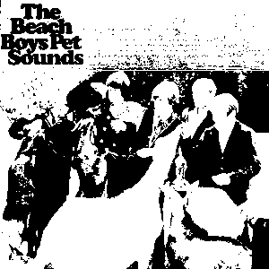

 1966's iconic 11th album from American rock band The Beach Boys. The album as a whole feels like it was written by a romantic teen biker, trying to woo his gal from the 1950s.
The album, that was published by Capitol/EMI, would have a lukewarm critical, and commercial response in the United States, while in the UK the album would reach to number 2 in the UK Top 40 Albums Chart, remaining among the top ten positions for six months.
The record is deftly a coming-of-age album, its lyrics contain themes of wanting to be with someone forever, and not just quick, teen love, but thinking of yourself as an adult.
An example of this can be seen on the opening track, Wouldn't It Be Nice, with the narrator fantasising of living with the woman he loves. He is not dreaming of staying young forever, but wanting to grow-up; "Wouldn't it be nice if we were older / Then we wouldn't have to wait so long / And wouldn't it be nice to live together / In the kind of world where we belong".
One year later in 1967, The Beatles would release Sgt. Pepper's Lonely Hearts Club Band, and album that was no doubt inspired by Pet Sounds. Beatles' singer, Paul McCartney, would frequently speak about his love of the album, citing "God Only Knows" as his favorite song of all time, and crediting his melodic bass-playing style to the album.
In 2015 the mashup album, "Pet Peppers" came out, it would be a remix of both Sgt Peppers, and Pet Sounds. It would be re-recorded by Hellbirds. The album can be found, and played for free at the below URL.